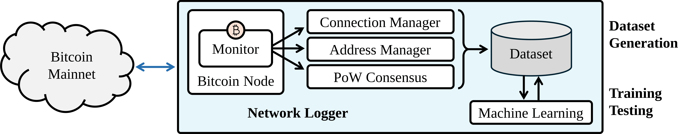
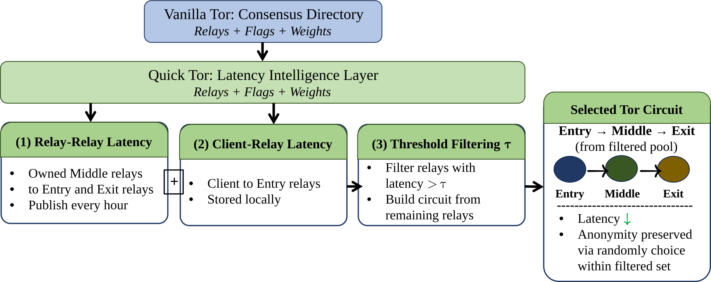

I am a Ph.D. Candidate in Cybersecurity in the Department of Computer Science at the University of Colorado Colorado Springs (UCCS). My research focuses on securing permissionless blockchain networking by leveraging AI/ML.
Research Focus
My research addresses critical security and performance challenges in permissionless blockchain networking and decentralized systems. I develop data-driven and AI/ML-based methods to strengthen peer-to-peer (P2P) communication, improve distributed consensus efficiency, and enhance anonymity-aware networking. By combining real-world Bitcoin Mainnet measurements with intelligent modeling, my work builds practical security mechanisms for peer evaluation, anonymous routing optimization, and resilient decentralized communication.
Machine Learning Applications in Security
I apply machine learning to model and predict networking behavior in permissionless blockchain systems. Using multi-layer Bitcoin Mainnet logs that I collect and generate, I design supervised models to estimate peer beneficialness and detect profile spoofing based on observable networking features. By transforming networking measurements into predictive intelligence, my work enables data-driven peer evaluation and adaptive security decisions in decentralized environments.

Figure 1: The overview of my implementation involving an active Bitcoin node connected to the real-world Bitcoin Mainnet. I implement the network sensor and logger, data collection, and machine-learning processing.
Quick Tor: An Intelligence-Enabled Low-Latency Tor
I build Quick Tor to reduce the propagation delay of Vanilla Tor in crytpcocurrency. Quick Tor adds a latency intelligence layer on top of Tor’s consensus directory without modifying its core architecture. It measures relay-to-relay and client-to-relay latency, applies a threshold-based filtering mechanism (τ), and constructs circuits from lower-latency relays while preserving anonymity.

Figure 2: The Quick Tor prototype, including an intelligence layer.